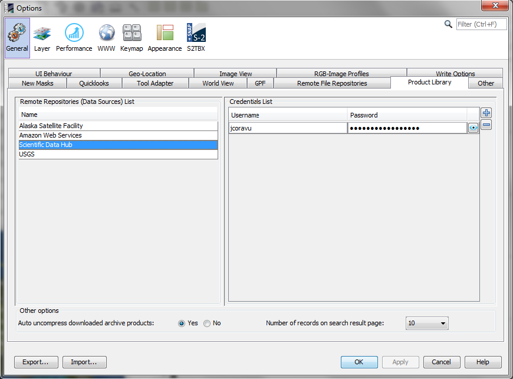
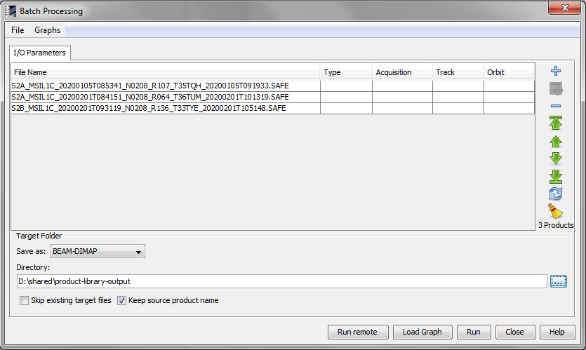
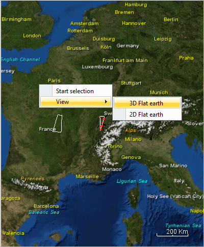

Product Library Tool
The Product Library Tool allows the user to search for products on a certain repository using specific filters to retrieve the product list.
Each repository has its own filters and some of them are mandatory.
The products may be searched in terms of mission, satellite, product type and acquisition date. They may also be searched by graphically drawing an area of interest on the world map.
There are two repository types:
- remote repository
- local repository
Remote repository
In order to access the products stored on a remote repository an authentication is required. In this case the user must define an account for that repository in the application.
Remote repository accounts
In order to add an account for a remote repository, access the 'Tools -> Options' menu and in the dialog window select the 'General -> Product Library' tab.

Other configurations for remote repositories that can be set here:
- auto-uncompress of compressed products after download
- the number of entries on results page
Search products on remote repository
The remote products may be searched using some mission specific parameters (filters).
The mandatory parameters for doing search operation by pressing search button are:
- Satellite
- Start Date
- End Date
- Area of Interest (AOI)
The following actions are available for the search results:
- browse to the next page by pressing next button
- browse to the previous page by pressing back button

- browse to the last page by pressing last button
- browse to the first page by pressing first button
- sort the results on the page by the following criteria:
- Product Name
- Mission
- Acquisition Date
- File Size
- see the attributes by pressing expand button:
- Download the product
- Joint Search Criteria (a new search is performed considering the selected product footprint as AOI and a time interval [product acquisition date - 7 days, product acquisition date + 7 days]
- see the products distribution on timeline (either by day when possible, either by month)
Download products from remote repository
The remote products may be downloaded into a local folder.
To download products press the mouse right button on the selected products and select the Download option. Then select
the local folder used to save the products. After downloading a product into a local folder, the product can be opened in the application.
Local repository
The local folder selected to download the remote product represents a local repository. The user may add/remove a local repository, refresh the product list from the local folders according to the saved metadata from the database.
The following actions are available for the local repository:
- add new local repository
- remove a local repository
- refresh the product list from the local folders according to the saved metadata from the database
-
search on local repository using the following parameters
- Folder
- Mission
- Start Date
- End Date
- Sensor
- Attributes
- Area of Interest (AOI)
-
sort the search results on the page by the following criteria:
- Product Name
- Mission
- Acquisition Date
- File Size
-
operate by means of a popup menu displayed after pressing the mouse right button on a selected product(s)
- open products in the application
- delete products from the database
-
process the products in the Batch Processing dialog

The dialog processes the selected local products by means of a graph in order to create new products according to the graph content.
- show the local folder containing that product
Note: The view of Area of Interest (AOI) can be changed by pressing the mouse right button on the map.
